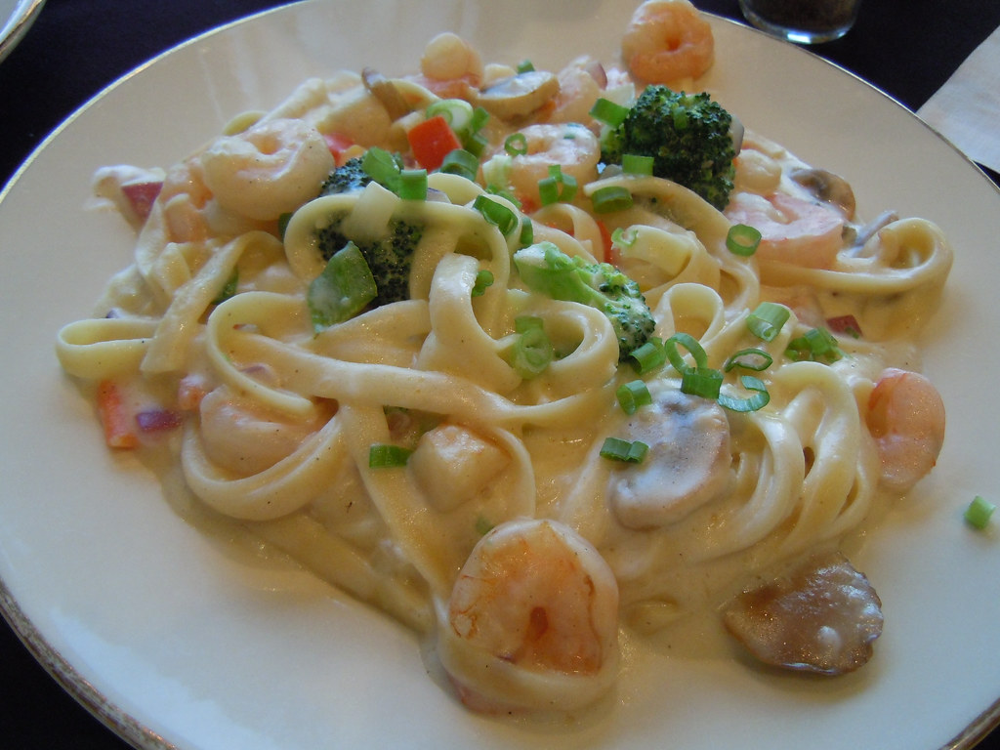

Back to Home
Shrimp and Mushroom Alfredo Pasta

Description
Shrimp and Mushroom Alfredo Pasta is my favourite comfort food. With its rich creamy texture, the explosive taste of cheese, the crunchy shrimps, and soft mushrooms. This is one recipe that I can always have seconds of.
Ingredients
- 3/4 lb of pasta of fettucine or penne pasta
- 1 lb of shrimps
- 1/2 lb of sliced white mushrooms
- 1/2 head of broccoli
- 1 small onion, diced
- 2 garlic cloves
- 2 cups heavy cream
- 1/3 cup parmesan cheese
- 1/3 cup white wine
- salt
- sugar
- paprika
- Dried Chili Flakes
- black pepper
- 2 Tbsp butter
- 1 Tbsp Pesto
- 1/2 Tsp Truffle Oil
Instructions
- Prepare the shrimp and soak under salt, sugar and baking soda for at least one hour. Rinse shrimp afterwards and they are ready for use.
- Blanche your broccoli and set aside
- Boil your pasta in salt walter until al dente. Keep some of the pasta water on the side to use if needed.
- Prepare your sauce by heating up the heavy cream to a simmer and add in salt, pepper, paprika, and parmesan cheese. Once thoroughly mixed, set aside
- Preheat your pan and add oil and shrimp. Once cooked, set aside.
- Add butter, onion, mushrooms, garlic until mushrooms have sweated enough
- Add broccoli, and white wine. Let the white wine reeduce and deglaze the pan.
- Add pesto, truffle oil, and chili flakes
- Add back in the shrimps, pasta, and alfredo sauce.
- add additional salt/spices as needed
- Enjoy!